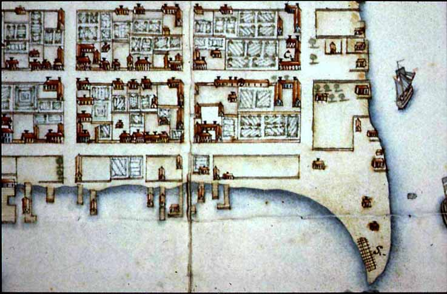
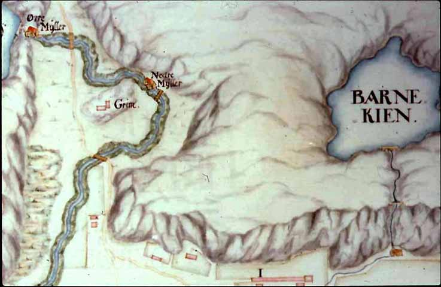
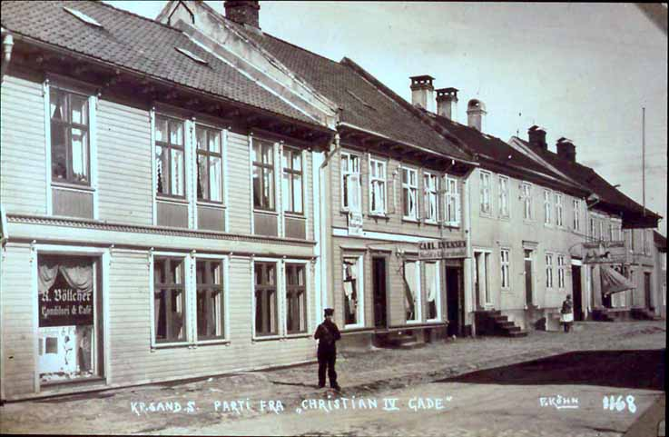
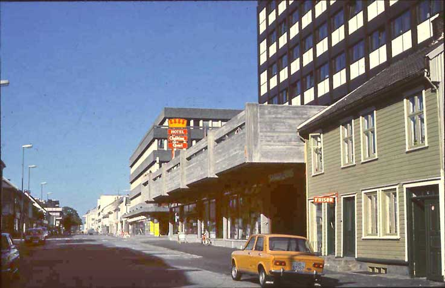
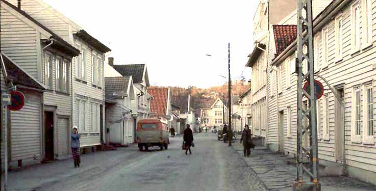
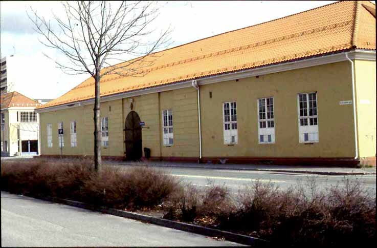

Kvadraturen - historiske bilder
En by er først og fremst mennesker, dernest hus. Denne bildeserien kommer likevel mest til å vise hus, men for å minne om at innbyggerne er viktigere.
Tekst: Jan Henrik Munksgaard
Foto: fra Vest-Agder Fylkesmuseums bildearkiv
Starter vi med å vise en førsteklasse fra Karl Johans Minne skole som i 1951 står utenfor domkirken like etter at de har vært tilgudstjeneste der.
Kristiansand, en by ved sjøen, med klar struktur: Gatene liger i et konsekvent rutemønster, ennå omtrent som da byen ble grunnlagt. Det var moderne byplanlegging den gang, og vi kan kanskje si at det er det fremdeles.
Danmark/Norge var tidligere et land med langt større utstrekning enn i dag, hele Skagerrak/Kattegatt-området, med Båhuslen, Skåne og Blekinge hørte med til riket. Bare et lite område rundt Gøteborg var svensk. Det er bakgrunnen for ar kongen ville ha et militært støttepunkt i Kristiansand, også for å gi trygghet for den viktige tømmerhandelen.
Fra diskusjonen om hvordan den nye byen skulle se ut. På den tiden var festningsmurer rundt en by vanlig. Dette er et kart fra et svensk arkiv.
En idealby fra renessansen, den italienske Palma Nova.
Kristiansand ble stukket ut i 1642, av Hans Jacobsen, Schiørt, som et firkantet rutenett, med rektangler, seks den ene veien og ni den andre. Det ble planlagt to kirker, symmetrisk på hver side av torget, med den andre ble aldri bygd.
Torget var opprinnelig tenkt noe nærmere sjøen, i Festningsgaten, med et lite tårn midt på torget.
Vi ser fra Baneheia mot sjøen: Det var et lite fjell der hvor Vindmølle-restauranten nå ligger, og torget ble lagt mellom dette og kirken. Den gang sprengte man ikke bort fjell.
Fremdeles frem til 1830, sto et halvt kvartal ubebygd, mot høyre på kartet, og ventet på den kirken som aldri kom.
Byen på midten av 1700-tallet, på kartet pyntet opp med hager som nok ikke fantes. Kvartalene lengst fra sjøen hadde vel ennå mer preg av små bondegårder.
Kirken var det sentrale, med stor kirkegård omkring. Faktisk måtte Kirkegaten ta en sving inn på torget for å komme utenom.
Øverst mot høyre biskopens og stiftamtmannens boliger. Ytterst på Tangen Borgerbevebningens kanonstillinger.
Samme område nærmere: Øverst litt mot høyre Bispeboligen, og under Stiftamtmannens ruvende bolig, sannsynligvis nokså realistisk fremstil, om enn i eiendommelig perspektiv og fargelegging.
Fra tidlig på 1800-tallet sto husene tett i tett, gavl mot gavl.
Christiansholm festning lå på en virkelig holme, med en nærmere 100 m lang gangbro inn til Retrenchementet.
Henrettelsesplassen lå omtrent der hvor vi i dag har en parkeringsplass, mellom Arkivet og sjøen. Vi ser to galger, og en steile med hjul på toppen, der forbryterens lik ble lagt.
To bekker: Grimsbekken omtrent der daskeferga nå legger til, og lenger nede Stampebekken, som rant fra Stampetjønn via Stampemølla, som stampet tøy til tett vadmel.
Stampemølla helt øverst til høyre. Øverst midt i bildet Reperbanen, som laget tauverk for seilskipsflåten. Altså litt industri i utkanten av byen.
Mer industri i dette området: Øvre mølle der vi har Kristiansands møller i dag, og Nedre mølle ved Grimsmyra. Øverst til høyre: "Barne-kien", altså Bånetjønn, som jo unektelig er blitt noe forflyttet.
Byen på begynnelsen av 1800-tallet, Vesterhavnen, med Mørchs privatbolig til venstre, revet i begynnelsen av 1970-årene. Til høyre: Ekbergs hus, som ennå står.

Vestre Strandgate går innover i bildet, og Østre Strandgate vannrett mot høyre. Patrisierhusene her gikk med i brannen i 1892. Vi ser noen av dem her: Til venstre "Det hollandske hus", etter eieren Johan Henrik van Kervel, svigersønn til Daniel Isaachsen.
Husene sto tett i tett, med lange fasader ut mot gata, her Christian IV gate.
Fra 1891. Vi står i Dronningensgate og ser oppover Kirkegaten. Huset til høyre er Kirkegaten 8. Politiet hadde hjelmer, omtrent som tyskerne under første verdenskrig. To særlig gamlehus, med gavlsiden mot gata.

Typisk gammelt Kristiansandshus. De eldste hadde stående panel. Til venstre ser vi inn på tømmerveggen.
Kalt "byens minste hus", mot venstre, i Gyldenløves gate. Nicolai Wergeland skrev at i denne delen av byen kunne husene mer virke som hytter enn som hus.
Sveitserstilen kom i 1850-årene, særlig etter brannen i 1859.
Etter den store bybrannen i 1892, som la store deler av den sør-østlige byen i ruiner. Bildet er tatt fra Tollbodgaten, nedover mot Festningen. Odderøya i bakgrunnen, og Norges Bank til høyre.
Samme brannherjede område, med Festningen øverst til høyre.
De røde bygningene viser tvungen mur-bebyggelse etter brannen, og angir dermed også hvor stort brannområdet var. Vi kan i dag vanskelig forestille oss hvilken katastrofe de store bybrannene utgjorde, for Kristiansand og andre norske byer med trebebyggelse. Men det er forståelig at murbygg ble påbudt.
Børsparken omkring 1800. Til høyre Ernst hotell, og andre nye hus som ble bygd opp i mur, her i Rådhusgaten. Hit gikk brannen: Murbygninger på høyre side, og Børsen, som trebygning, til venstre.
Tollbodgaten, mellom Kronprinsensgate og Holbergsgate. Det eneste stedet i Kristiansand hvor en fremdeles kan se tydelig skille mellom trebyen på høyre side, og murbyen på venstre.
De nye bygningene ble oppført i en blandingsstil, som vi i dag kaller historisme. Byggherrene henter trekk fra renessanse, barokk, gotikk og andre retninger, blander dem og lager det hele om til sitt eget. Etter i noen år å ha sett noe ned på en slik blandingsstil, begynner vi vel nå å oppdage sjarmen.
Samme historistiske blandingsstil, med gavlene som i et gresk tempel. Greske dekorasjoner, men smijernsstakitt på taket fra en helt annen stilepoke.
Reinhardts bygg, i nybarokk stil, med frodige dekorasjoner, og en første etasje som etter tidens smak skulle virke tyngre enn andre etasje. En vellykket sammensmeltning av mange stilimpulser, vil vi vel si i dag.
En enklere musteinsbygning i Kongensgate, fra samme gjenoppbyggingsperiode.
Gjensidige-gården, i Markensgate, restaurert etter fine prinsipper. I dag en vakker bygning.
Men Kristiansand besto også veldig lenge av mange trehus: Trehusbebyggelsen som ikke ble tatt av branden i 1892, ofte kalt Posebyen, ble stående.
Tyske tropper på vei inn til byen i motortorpedobåt 9. april 1940. Under hele krigen forble byens ansikt uendret: Lite ble revet og lite bygd.
Men etter freden kom ddt fart i sakene. Her ser vi jernbanebrua, som sto ferdig omkring 1948. Vågsbygdruta midt i bildet. Vågsbygd vokste opp som en satelittby, fordi det ikke var mer plass i Kvadraturen.
Gartnerløkka og begynnelsen på Setesdalsveien omkring 1915. I bakgrunnen Markensgate, altså gaten som førte ut til byens beitemark. Det var jo lenge husdyrhold inne i kvadraturen, særlig områdene lengst fra sjøen.
Gartnerløkka i 1951, sett i motsatt retning. Forlatte tyskerbrakker er overtatt av husløse familier. Det var alvorlig boligmangel, særlig det første tiåret etter krigen. Under krigen hadde lite nytt blitt bygd.
Gartnerløkka i 1990-årene. I dag opptas området av bro- og veisystemer.
Børsen, oppført i 1734, og en av de vakre bygningene som er blitt sanert bort i 1960-årene. Den tempelinspirerte inngangsportalen var noe yngre.
Gerhardts bygning i Vestre Strandgate, revet i begynnelsen av 70-tallet. Bygninger som i alle fall snart skulle rives, ble naturlig nok ikke omhyggelig vedlikeholdt.
Vestre Strandgate skole er også en av de fine 1700-talls bygningene som ble revet i begynnels3n av 70-årene.
Langs hele Vestre Strandgate sto det praktfulle patrisierhus, eid av byens rike borgere. De fleste av dem er nå borte, for eksempel Ole Clausen Mørchs privatbolig, bygd i 1806. Bygningen ble senere Carl Johan Minne skole. Det var et av de siste tradisjonsrike bindingsverkshusene. Det forsvant i 1971, for å gi plass for Mega.
Vi har lett for å romantisere fortiden, når vi snakker om de vakre bygningene som ble fjernet. Men det var til dels kummerlige boforhold i de såkalte saneringskvartalene: Utedo, vann ute i gården, i det hele tatt dårlige sanitære forhold.
I mellomkrigstiden var byen stort sett begrenset til Kvadraturen. Men så tok man i bruk nye utbyggingsområder, som her Valhalla på Lundsiden.
Hjørnet Holbergsgate/Kristian IV gate. Alt dette ble revet.
Også dette ble revet. Litt vemodig i dag, kanskje. Men den gang så man annerledes på det: De gamle rønnene måtte bort, og gi plass for en ny tid.
Ett av mange forslag for hvordan byen skulle se ut etter en omfattende sanering: Oppløste kvartaler, og store nye parkområder.

Begynnelsen på en slik plan kan vi i dag se opp mot det gamle sykehuset.
Et eksempel på det samme: Denne sykehusblokka, som ble satt midt inne i det såkalte Kvartal 6, det nordøstligste kvartalet. Senere kom det også rand-bebyggelse rundt området, etter planskissens ideer.
Den gamle byplans prinsipper: En åpen by, hvor vi ser rett ut til havet.
Her derimot er gateløpet og utsynet blitt stengt. Det er egentlig imot byplanens prinsipper.
Nærmeste hus til høyre (nå revet) illustrerer den gamle bystrukturen: Lave hus tett i tett, med fasadene mot gaten. I nybygget bak stikker annen etasje ut over fortauet, mens tredje etasje er trukket langt inn. Byens struktur oppløses. Utenkelig for hundre år siden.
Fengslet i Festningsgaten, revet i 70-årene.
Samme område, sett fra sørsiden.
Festningsgaten, som den så ut fram til første del av 1970-tallet, med samme bredde som andre gater i byen. Den venstre, vestlige husrekken ble revet, for å gi plass for ny trafikkåre inn til byen. I neste bilde ser vi at huset helt til høyre fremdeles står, -
- men hele den vestlige husrekken er borte. Kanskje den alvorligste planleggingstabbe i byens historie. Kristiansand har ikke lenger en renessansebys struktur.
Det store diskusjonstema var, og er fremdeles, om trafikken skulle ledes gjennom byens sentrum. I så fall måtte den gis plass, på bekostning av gammel arkitektur.
Heldigvis ble likevel mange vakre bygninger spart.
Et av de fineste: Bentsens stilrene hus, Krinprinsensgate 59, i dag eiet av Kristiansand kommune.
På hjørnet av Holbergsgate og Kristian IV gate. Flott bygning fra begynnelsen av 1800-tallet.

To hus i Kronproinsensgate, restaurert som ett. Eksempel på det konglomerat av bygninger som eksisterte i Kristiansand for et par hundre år siden.

Vestre Strandgate 44 viser kontrasten mellom det nye og det gamle: Hånesbygget bak den staselige men litt forfalne gamle boligen til Ole Clausen Mørch, senere Sjømannshjemmet. Og i dag flyttet til Vest-Agder Fylkesmuseums Bygade.
Den nye type arkitektur i Kristiansand, på hjørnet Dronningensgate/Markens.
Men fremdeles står likevel noen av de riktig gamle murbygningene: Ekserserhuset fra 1808, tegnet av Henrik Wergelands onkel Benoni d'Aubert, gift med søster av Henriks mor.
Nyere arkitekturs formspråk i Kristiansand
Gågaten i Kristiansand, en sjarmernde blanding gammelt og nytt, ombygd og tilpasset, i frodig forvirring.
Torvet, med bystyresalen, hvor Kristiansands fremtid bestemmes.